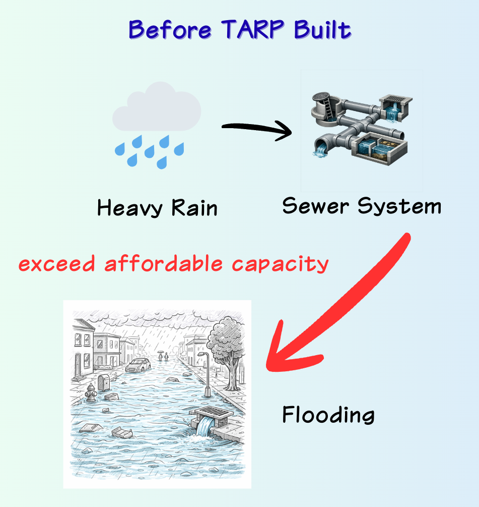
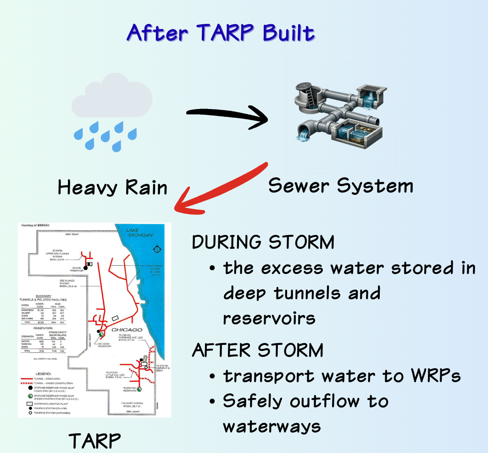

This interactive map introduces Chicago’s Tunnel and Reservoir Plan (TARP), a major underground infrastructure system designed to reduce flooding and improve water quality. Use the zoom buttons in the side panel to explore individual tunnel systems and related facilities, then open each section to learn how the system works and why it matters.


TARP key milestones (vertical timeline). You can edit the text anytime.
TARP adopted
MWRD formally adopts the Tunnel and Reservoir Plan (TARP).
Tunnel construction begins
Deep tunnel construction starts.
First tunnel portions begin operation
Early tunnel segments begin operating.
Majewski Reservoir completed
Gloria Alitto Majewski Reservoir is completed.
Entire tunnel system operational
Deep tunnel network (Phase I) is complete and operational.
Thornton Composite Reservoir operational
Thornton Composite Reservoir begins operation.
McCook Reservoir Stage 1 operational
McCook Reservoir Stage 1 begins operation.
Thorn Creek Overflow Tunnel connected
A Thornton system completion milestone is achieved.
McCook Stage 2 delay & updated estimate
MWRD reports Stage 2 remains under construction and updates the completion estimate.
McCook Reservoir Stage 2 operational (estimated)
Projected completion of the final major component.
This chart shows how much water each reservoir can store. Larger storage means greater ability to hold excess water during storms.
This chart compares the length of each tunnel system so viewers can quickly see the scale differences across TARP.